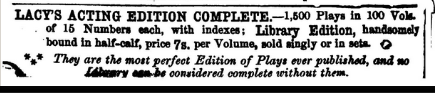
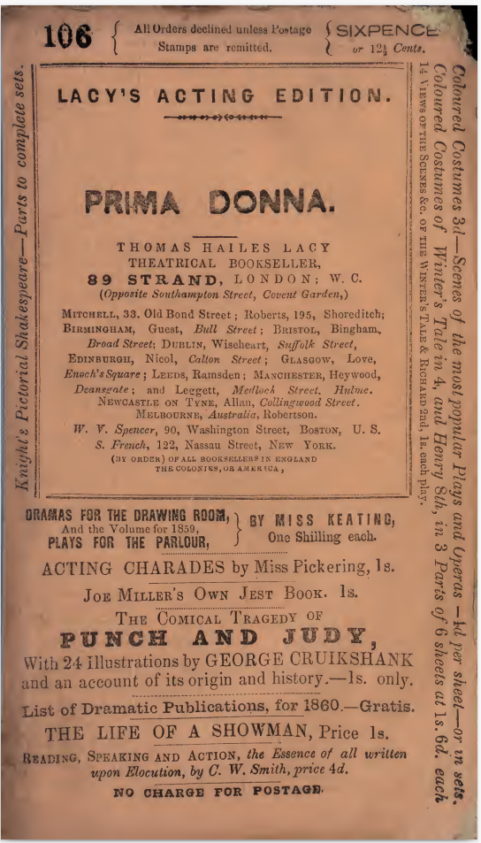
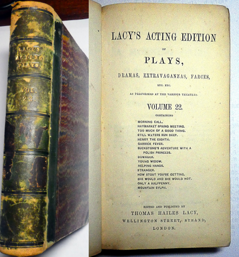
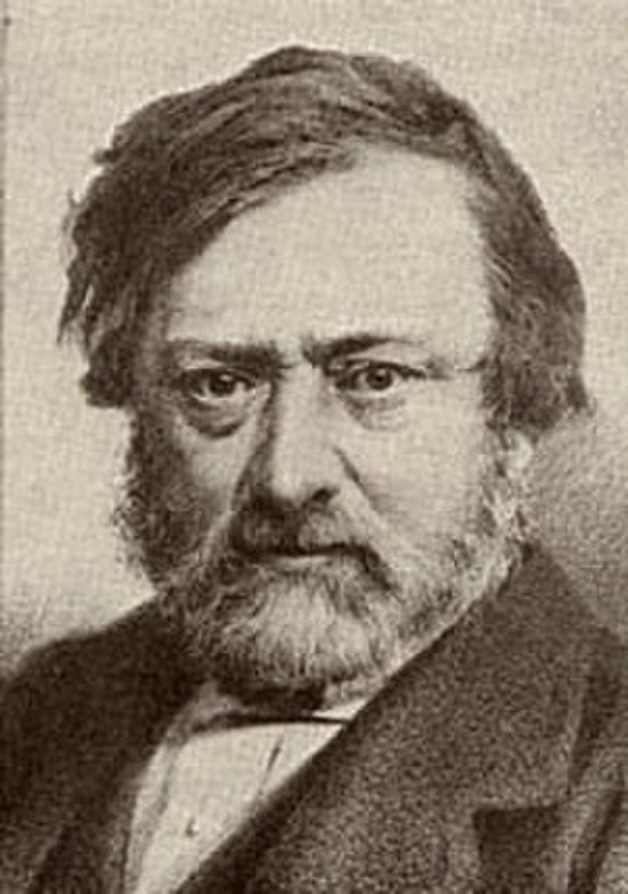
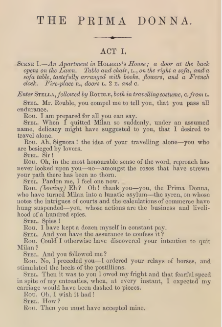
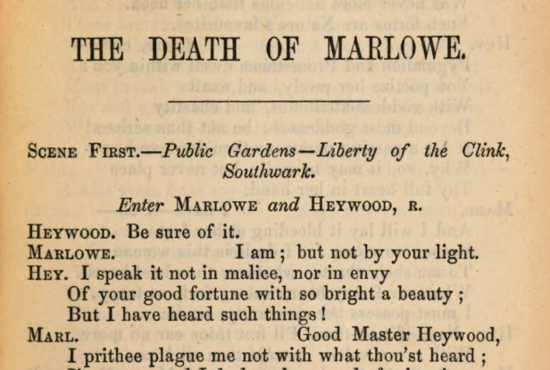
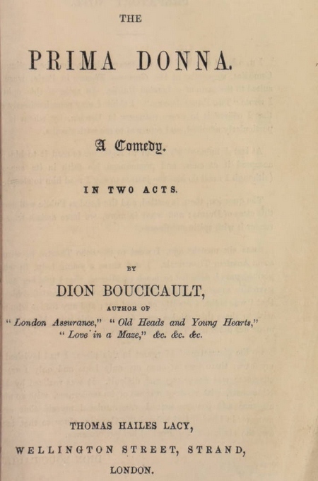
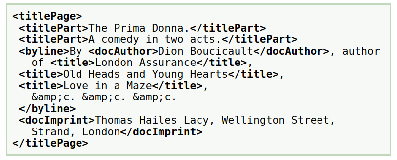
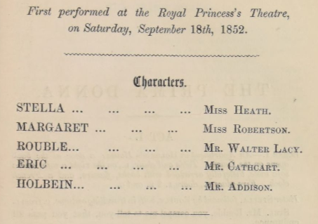
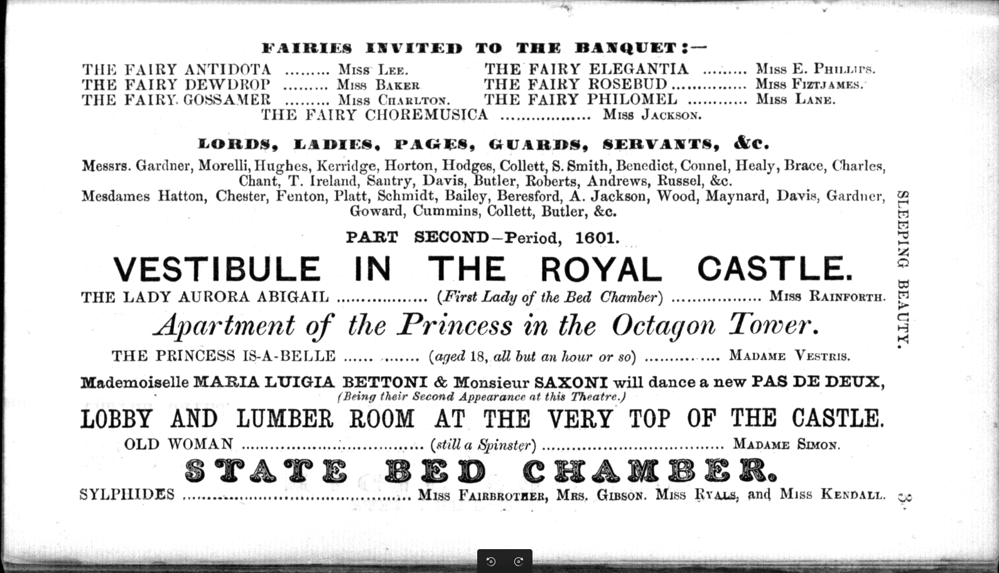

« L'édition de pièces de théâtre la plus parfaite jamais publiée » : vers une
numérisation de Lacy's Acting Edition.
Lou Burnard
L'édition la plus parfaite jamais publiée

C'est quoi, une "Acting edition" ?
C'est qui, Thomas Hailes Lacy ?
L'édition considérée comme corpus numérique
Modalités du travail de construction
Etat actuel du corpus.
Acting edition: le concept
Edition des œuvres dramatiques au XIXe siècle: un démarche compliqué
Les droits d'auteur etait en transition: au debut du siecle, imprimer une piece etait la meilleur methode d'assurer qu'elle soit piratée
Toute représentation théatrale devrait etre licenciée par une office d'etat (le Lord Chamberlain's Office)
Toute représentation theatrale necessitait paiement d'une redevance au ayant-droit: soit un editeur comme Lacy, soit la Society of Dramatic Authors
Les editeurs vendait les "Acting Editions" sous un format très pauvre
Le marché supportait:
la pièce individuelle à 6 pence
le volume relié à 7 shillings
Avec quelques exceptions, éditer l'oeuvre complète d'un auteur dramatique n'était guère rentable avant la fin du siecle
Une pièce individuelle
prix modeste
public ciblé: acteurs professionels et amateurs
disponibilité tres répandu

Un volume relié
prix moins modeste (selon reliure)
public ciblé: collectionneurs respectables
100 volumes sont parus entre 1848 et 1873
chacun contenant 15 titres très variés, et restant imprimé

Thomas Hailes Lacy (1809-1873)

Éditeur et dramaturge anglais, Lacy s'est lancé en ecrivant une poignée de pièces sans distinction pour les petits théâtres de Londres. Sa conjointe etait une actrice à succès modéré. En 1851, il s'installe comme éditeur de pièces de théâtre au 89 Strand, créant une série intituléeLacy's Acting Editions.
Avec d'autres séries concurrantes, (Cumberland, Duncombe, Richardson, Dicks ..) Lacy's représentait presque la seule façon dont les pièces étaient publiées après environ 1830, suite à la disparition du marché pour les octavos liés à 3 ou 5 shillings.
Lacy a acheté les droits d'auteur de l'auteur pour une petite somme, parfois aussi basse que 5 £ ou 3 £, puis a collecté des redevances auprès d'amateurs et de professionnels pour toutes les pièces de ses listes: une affaire tres rentable. La série de Lacy a été reprise par son ami new-yorkais Samuel French dans les années 1860 et se poursuit encore aujourd'hui.
Le paysage dramatique du 19e siecle : un aperçu quantitatif
Grace aux travaux d'Allardyce Nicoll dans son A history of English Drama 1660-1900 (CUP 1959), nous disposons d'un bilan tres complet des représentations théatrales: ca. 25 000 représentations entre 1800 et 1900 y sont énumerées. Ces notices derivent principalement
des archives du Lord Chamberlain's Office
des revues contemporaines
des affiches théatrales
Chaque notice contient:
le nom d'un (ou plusieurs) auteur
une indication de genre
un titre (ou plusieurs)
la théatre ou lieu et la date de la première représentation
des informations sur le licencement
détails de publications eventuelles
d'autres remarques
(Une version bien structurée en TEI est en cours...)
La théatre imprimée
La vaste majorité des représentations constatées par Nicoll n'ont aucune version imprimée ou publiee
Pour les 3 000+ representations associées avec un texte imprimée, les "Handlists" indiquent la maniere ou chaque piece fut editée
A son apogée, Lacy est responsable de 80% des publications théatrales
Sa domination du marché (jusqu'aux 70s) correspond avec une diminution en l'usage des formats classiques (octavo, duodecimo)
Caracteristiques du corpus
Taille des pièces
"Fraicheur" des textes
Type des pièces
Taille de pièce
La taille des pièces, en "actes" ou en pages, semble varier avec son type (drame, farce, etc.)
Les drames sérieuses et les tragédies necessitaient au moins 3, 4, ou 5 actes i.e. vers 50 pages; les farces et les petites comédies beaucoup moins (entre 10 et 50 pp)
Jusqu'aux 80s, une soirée théatrale typique nécessitait une grande pièce avec une ou deux petites pièces d'accompagnement
La taille d'une pièce (no. des actes) déterminait ses bénéfices financières -- à l'auteur, au licenseur -- et bien sur son prix de production
Avec deux exceptions, chaque volume de la LAE fournissait des pièces de taille assortie. Une des exceptions (vol 19) est un volume évidemment conḉu comme hommage à J.R. Planché, ne contenant que son oeuvre
"Fraicheur"
La datation d'une pièce n'est ni evidente ni certaine: la plus fiable serait la date de sa première représentation
Nous calculons pour chaque volume: l'an, et combien de pieces contenues sont agées de moins de 10 ans (en bleu), plus de 20 ans (en orange), et entre les deux (en rouge)
Sauf quelques exceptions, le plupart des volumes contenaient majoritairement des pièces récentes. Mais la proportion de pieces plus antiques parait s'accroitre vers la fin de l'édition.
Encodage TEI (minimal)
Nos objectifs:
faciliter l'analyse automatique des composants structurants (scenes, repliques, didascalies, etc.)
defavoriser la representation des conventions typographiques
preferer un balisage simple et coherent -- voire apauvri
permettre l'enrichissement graduel
Exemple en prose

<body><head>The Prima Donna.</head><div type="act"><head>Act I.</head><stage>Scene I —An Apartment in Holbein's House a door at the back opens on the Lawn. Table and
chair L. on the right a sofa, and a sofa table, tastefully arranged with books flowers and a
French clock. Fire-place R., doors L 2 E and C. </stage><stage> Enter Stella, followed by Rouble both in travelling costume, C. from L. </stage><sp><speaker>Stel.</speaker><p>Mr Rouble you compel me to tell you that you pass all endurance.</p></sp><sp><speaker>Rou.</speaker><p>I am prepared for all you can say.</p></sp><sp><speaker>Stel.</speaker><p>When I quitted Milan so suddenly, under an assumed name, delicacy might have suggested to you
that I desired to travel alone.</p></sp><sp><speaker>Rou.</speaker><p>Ah signora ! the idea of your travelling alone—you who are besieged by lovers.</p></sp><sp><speaker>Stel.</speaker><p><stage>(Outraged)</stage>Sir!</p></sp></div></body>
Exemple en vers
<body><head>The Death Of Marlowe.</head><div type="scene"><stage type="setting">Scene First. — Public Gardens
— Liberty of the Clink, Southwark. </stage><stage>Enter Marlowe and Heywood, R. </stage><sp><speaker>Heywood.</speaker><l>Be sure of it.</l></sp><sp><speaker>Marlowe.</speaker><l>I am ; but not by your light.</l></sp><sp><speaker>Hey.</speaker><l>I speak it not in malice, nor in envy</l><l>Of your good fortune with so bright a beauty ; </l><l>But I have heard such things!</l></sp><sp><speaker>Marl.</speaker><l>Good Master Heywood,</l><l>I prithee plague me not with what thou'st heard; </l>
... </sp></div></body>

Encodage des pages de titre


Encodage des castings

<performance><p>First performed at the Royal Princess's Theatre,
on Saturday, September 18th, 1852.</p><castList><head>Characters</head><castItem><role gender="F">Stella</role><actor sex="F">Miss Heath.</actor></castItem><castItem><role gender="F">Margaret</role><actor sex="F">Miss Robertson.</actor></castItem><castItem><role gender="M">Rouble</role><actor sex="M">Mr. Walter Law.</actor></castItem><castItem><role gender="M">Eric</role><actor sex="M">Mr. Cathcart.</actor></castItem><castItem><role gender="M">Holbein</role><actor sex="M">Mr. Addison.</actor></castItem></castList></performance>
Exemple un peu plus complexe...

Encodage de ce qui precede ..
<pb n="3"/><castList><head> Fairies Invited To The Banquet </head><castItem><role gender="F">The Fairy Antidota</role><actor sex="F"> Miss Lee.</actor></castItem><castItem><role gender="F">The Fairy Elegantia</role><actor sex="F">Miss E. Phillips.</actor></castItem><castItem><role gender="F">The Fairy Dewdrop </role><actor sex="F">Miss Baker</actor></castItem><castItem><role gender="F">The Fairy Rosebud</role><actor sex="F">Miss Fitzjames.</actor></castItem><castItem><role gender="F">The Fairy Gossamer</role><actor sex="F">Miss Charlton.</actor></castItem><castItem><role gender="F">The Fairy
Philomel</role><actor sex="F">Miss Lane.</actor></castItem><castItem><role gender="F">The
Fairy Choremusica </role><actor sex="F">Miss Jackson. </actor></castItem><castItem><role gender="M">Lords, Ladies, Pages, Guards, Servants, &c.</role><actor sex="M">Messrs.
Gardner, Morelli, Hughes, Kerridge, Horton, Hodges, Collett, S. Smith, Benedict, Connel, Healy,
Brace, Charles, Chant, T. Ireland, Santry, Davis, Butler, Roberts, Andrews, Russel,
&c.</actor><actor sex="F"> Mesdames Hatton, Chester, Fenton, Platt, Schmidt, Bailey,
Beresford, A. Jackson, Wood, Maynard, Davis, Gardner, Goward, Cummins, Collett, Butler,
&c.</actor></castItem></castList><castList><head>Part Second-Period, 1601. Vestibule In
The Royal Castle.</head><castItem><role gender="F"> The Lady Aurora
Abigail</role><roleDesc>(First Lady of the Bed Chamber)</roleDesc><actor sex="F"> Miss.
Rainforth.</actor></castItem></castList><castList><head> Apartment of the Princess in the
Octagon Tower, </head><castItem><role gender="F">The Princess Is-A-Belle
</role><roleDesc>(aged 18, all but an hour or so)</roleDesc><actor sex="F">Madame Vestris.
</actor></castItem></castList><p> Mademoiselle Maria Luigia Bettoni & Monsieur Saxoni will dance a new Pas De Deux,
(Being their Second Appearance at this Theatre.) </p><castList><head>Lobby And Lumber Room At The Very Top Of The Castle.</head><castItem><role gender="F"> Old Woman</role><roleDesc>(still
a Spinster)</roleDesc><actor sex="F">Madame Simon.</actor></castItem></castList><castList><head> State Bed Chamber. </head><castItem><role gender="F"> Sylphides.</role><actor sex="F">Miss Fairbrother, Mrs. Gibson. Miss Ryals, and Miss Kendall.</actor></castItem></castList>